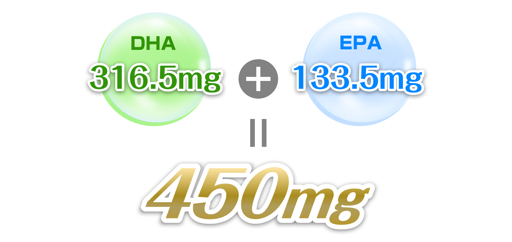
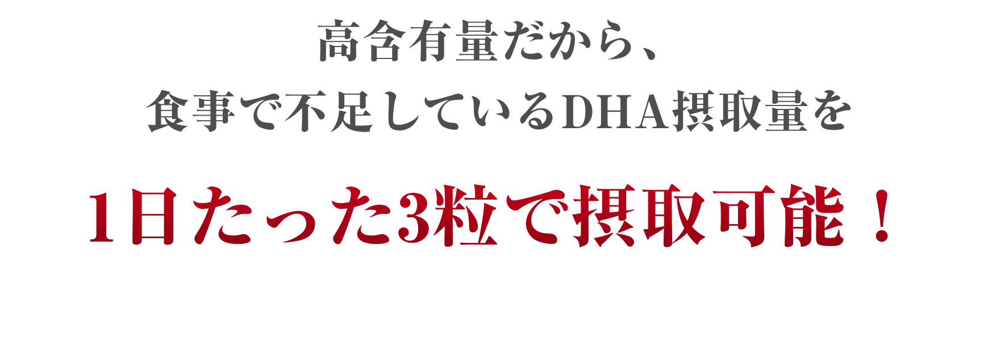
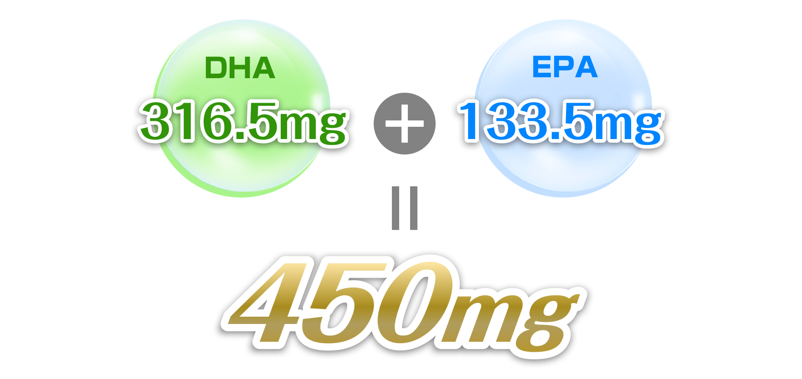
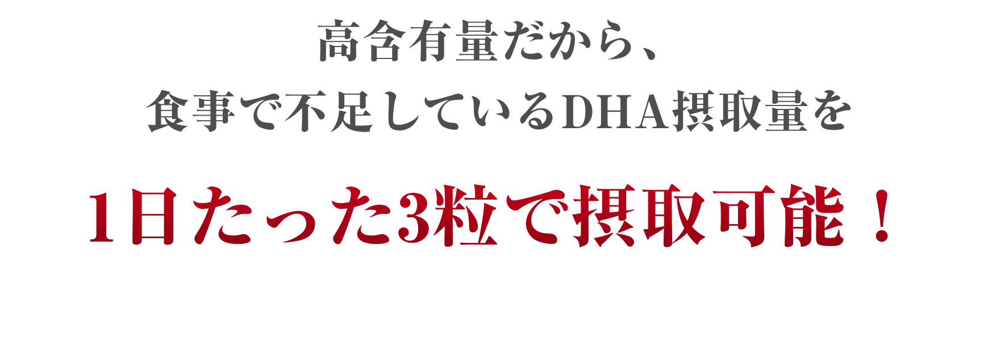

DHA/EPAは脳や心臓など体の重要な部分に存在するにもかかわらず、人間の体内では作ることができないのです！
だからこそ、健康のために欠かせない栄養素であるDHA/EPAを、食事やサプリメントから摂取する必要があるのです！

DHA/EPAは脳や心臓など体の重要な部分に存在するにもかかわらず、人間の体内では作ることができないのです！
だからこそ、健康のために欠かせない栄養素であるDHA/EPAを、食事やサプリメントから摂取する必要があるのです！
 


DHAにとって致命的リスクである『酸化』。
Life’sDHAの原料である「藻」は専用タンク内で密閉培養。
劣化・酸化を防ぐために遮光ボトルで冷凍保管など、徹底した品質管理がされています。
魚由来のものよりも酸化リスクを限りなくゼロに近づけています！
また培養工場は全てアメリカ・サウスカロライナで行われ、安全性も折り紙付きです。

life’sDHAは、これまで世界で120報以上の研究論文が
発表されるなど、非常に盛んに研究されてきた研究対象の一つです。
植物由来のDHAであるlife’sDHAは、空気に一切触れない閉鎖系タンクで培養された藻から抽出されています。
従来の魚由来DHAと違い、DHAの起源である”藻類”から
ダイレクトに抽出することで、
不純物を取り除く工程が最小限にとどめられること、
また、生産後すぐにー20度以下に冷却して保管されることで、
魚油よりも純度、鮮度、安全性が高いのが特徴です。
製造拠点であるアメリカ、ノースキャロライナの工場は、
cGMPやFDA、AIPの査察をクリアするなど、
厳格な品質管理体制のもと製造される最も安心で
安全な植物性DHAとして、life’sDHA入りミルクは
世界の赤ちゃん約150億人に飲まれています。
life’sDHAはNASA(アメリカ航空宇宙局)の研究から産まれました。
長期間におよぶ宇宙でのミッションの際、
栄養素や酸素の供給源として、微細藻類の利用を検討。
NASAのパートナー企業、マーテックバイオサイエンス株式会社が研究に着手し、高レベルのDHAを産生する藻類の研究を進め、「 life’sDHA™」（ライフズDHA）の開発に成功しました。
この「 life’sDHA™」を用いた臨床試験が数多く
行われ、今では120以上もの論文が執筆されています。
世界的にもかなり研究が進んでいる、
信頼性の高いDHAです。
life’sDHAはNASAのホームページでも掲載されるなど、その歴史は今でも伺えます。